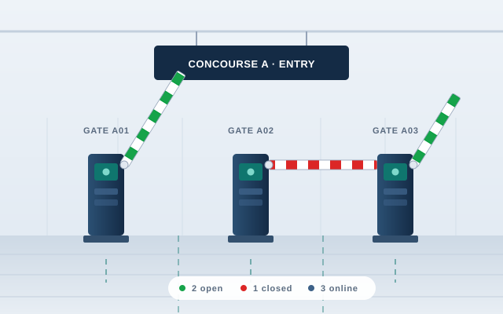

Member 3 · Gate Control / KL Sentral cluster
Gate Control
Monitor every entry and exit barrier, inspect gate decisions and trace each passenger event.
Gates online
6 of 8
2 devices need attention
Entries today
1,412
Since 05:00 · 3 stations
Exits today
1,435
23 more exits than entries
Denied today
86
Mostly insufficient balance
Gate configuration
Operating parameters for a single barrier device.
Entry gate interface
GATE-A03 · KL Sentral · Concourse A
GATE-A03
KL Sentral · Entry
Entry status
OPEN
- Station
- KL Sentral
- Ticket ID
- TKT-2026-884120
- Entry time
- 08:14:22
- Barrier hold
- 6 seconds
| Field | Value | Result |
|---|---|---|
| Passenger name | Nurul Aisyah binti Rahman | |
| Passenger ID | PSG-2026-004178 | |
| Ticket ID | TKT-2026-884120 | Valid |
| Account status | Active | Permitted |
| Wallet balance | RM 68.40 | Sufficient |
| Entry time | 23 Nov 2026 · 08:14:22 | Gate Open |
Exit gate interface — successful
GATE-B01 · Subang Jaya · Platform 2
GATE-B01
Subang Jaya · Exit
Payment status
PAID
- Fare charged
- RM 2.60
- Balance after
- RM 68.40
- Duration
- 27 min
- Distance
- 18.6 km
| Field | Value | Result |
|---|---|---|
| Ticket ID | TKT-2026-884120 | Valid |
| Entry station | KL Sentral · 08:14:22 | |
| Exit station | Subang Jaya · 08:41:07 | |
| Travel duration | 27 minutes | |
| Fare amount | RM 2.60 | Deducted |
| Wallet balance after | RM 68.40 | Sufficient |
| Payment status | Paid in full | Gate Open |
The deduction shown here is a visual demonstration only. No wallet balance is changed anywhere in this prototype.
Exit gate interface — failed
GATE-B03 · Subang Jaya · Concourse
GATE-B03
Subang Jaya · Exit
Payment status
FAILED
- Fare required
- RM 2.60
- Wallet balance
- RM 4.20
- Shortfall
- RM 0.00
- Barrier
- Closed
Exit result
ACCESS DENIED
Passenger account suspended · ticket expired 31 Oct 2026
| Field | Value | Result |
|---|---|---|
| Ticket ID | TKT-2026-004180-771034 | Expired |
| Passenger | Tan Wei Ling | Suspended |
| Entry station | Shah Alam · 07:31:44 | |
| Exit station | Subang Jaya · 07:59:03 | |
| Fare required | RM 2.60 | Not deducted |
| Payment status | Payment failed | Access Denied |
The passenger is directed to the staffed counter. The barrier remains closed until a valid ticket is presented.
Recent gate activity
Every barrier event recorded across the station network today.
| Transaction ID | Passenger ID | Station | Gate ID | Entry / Exit | Date & time | Gate result |
|---|---|---|---|---|---|---|
| GTX-2026-11-23-3312 | PSG-2026-004178 | KL Sentral | GATE-A03 | Entry | 23 Nov 2026 · 08:14:22 | Gate Open |
| GTX-2026-11-23-3313 | PSG-2026-004178 | Subang Jaya | GATE-B01 | Exit | 23 Nov 2026 · 08:41:07 | Gate Open |
| GTX-2026-11-23-3311 | PSG-2026-004181 | KL Sentral | GATE-A01 | Entry | 23 Nov 2026 · 08:12:58 | Gate Open |
| GTX-2026-11-23-3310 | PSG-2026-004180 | Shah Alam | GATE-C02 | Entry | 23 Nov 2026 · 08:11:44 | Access Denied |
| GTX-2026-11-23-3309 | PSG-2026-004179 | KL Sentral | GATE-A04 | Entry | 23 Nov 2026 · 08:09:31 | Gate Open |
| GTX-2026-11-23-3308 | PSG-2026-004182 | KLCC | GATE-D02 | Entry | 23 Nov 2026 · 08:06:12 | Gate Open |
| GTX-2026-11-23-3307 | PSG-2026-004181 | Klang | GATE-E01 | Exit | 23 Nov 2026 · 08:03:47 | Gate Open |
| GTX-2026-11-23-3306 | PSG-2026-004180 | Subang Jaya | GATE-B03 | Exit | 23 Nov 2026 · 07:59:03 | Insufficient Balance |
| GTX-2026-11-23-3305 | PSG-2026-004182 | KL Sentral | GATE-A02 | Entry | 23 Nov 2026 · 07:55:20 | Gate Open |
| GTX-2026-11-23-3304 | PSG-2026-004179 | Subang Jaya | GATE-B02 | Exit | 23 Nov 2026 · 07:51:09 | Gate Open |
| GTX-2026-11-23-3303 | PSG-2026-004178 | KL Sentral | GATE-A03 | Entry | 23 Nov 2026 · 07:44:38 | Gate Open |
| GTX-2026-11-23-3302 | PSG-2026-004181 | KL Sentral | GATE-A01 | Exit | 23 Nov 2026 · 07:40:15 | Gate Open |
| Gate events today | 1,412 in / 1,435 out | 86 denied |
Concourse overview
Concourse A · northbound barrier bank

GATE-A01 and A03 are open; A02 is holding closed after a denied entry.
Gate fleet status
- Configured gates
- 8
- Online
- 6
- Degraded
- 1
- Offline
- 1
- Network
- Online
- Controller
- GCC-KLS-02
Ticket identification
A gate resolves the passenger from one of three media references before it can decide whether to open.
| NFC card | AFC-CARD-4401982 |
| Mobile QR | QR-MYR-884120 |
| Paper barcode | BC-2026-884120 |
These match the references shown in the media processing module.
Entry / exit outcomes
A denied exit keeps the barrier closed and raises a staff alert at the concourse console.
Gate device register
All barriers configured on the network, with today's read volume.
| Gate ID | Station & location | Mode | Device status | Reads today | Denied |
|---|---|---|---|---|---|
| GATE-A01 | KL SentralConcourse A | Entry | Online | 412 | 0 |
| GATE-A02 | KL SentralConcourse A | Entry | Online | 388 | 2 |
| GATE-A03 | KL SentralConcourse A | Entry / Exit | Online | 506 | 1 |
| GATE-B01 | Subang JayaPlatform 2 | Exit | Online | 341 | 0 |
| GATE-B02 | Subang JayaPlatform 2 | Exit | Online | 298 | 1 |
| GATE-C02 | Shah AlamConcourse | Entry | Online | 176 | 7 |
| GATE-D02 | KLCCConcourse | Entry | Degraded | 203 | 4 |
| GATE-E01 | KlangPlatform 1 | Exit | Offline | 0 | 0 |